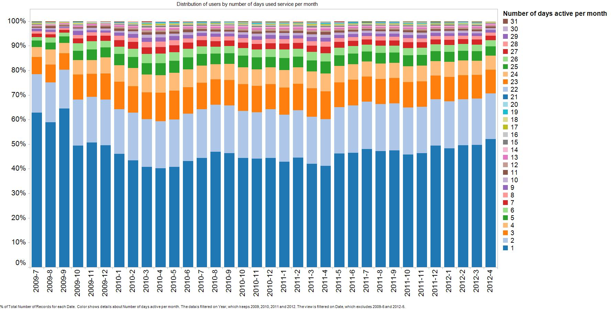
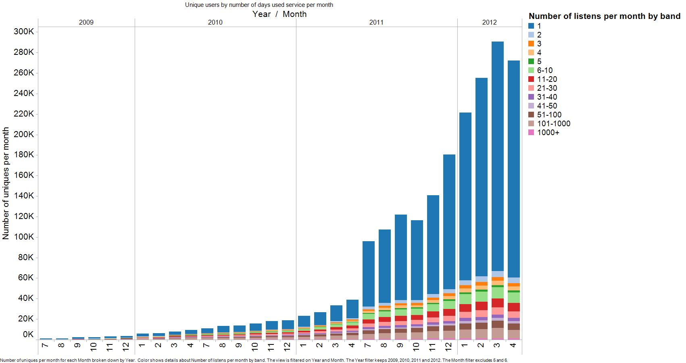
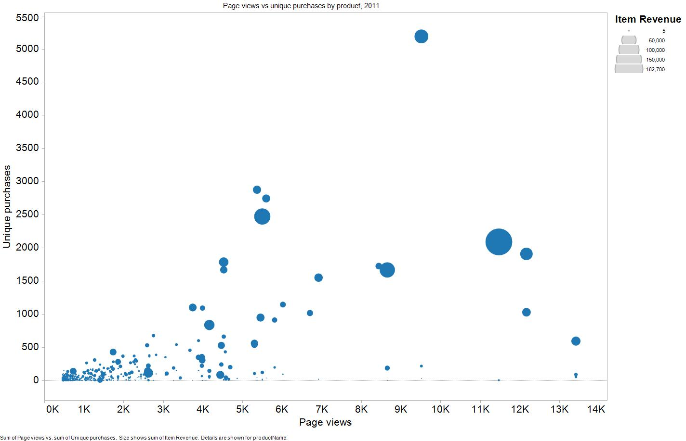

Your web analytics data in your hands
We help you use your customer, catalogue and web analytics data to drive platform development and marketing decisions.
Learn more about our approach to analytics projects below:
The profliferation of data (especially customer data) means there are more opportunities to use it to make the right platform development and marketing decisions.
However, there are often barriers to using data to drive decision making:
The primary output of any analytics project is a Powerpoint deck that directly addresses the business question posed, and weaves the different analyses performed into a coherent narrative in support of a specific recommendation for the client.
Some illustrateive analyses from past projects are shown below, to give a flavour of the analyses we produce.
A SnowPlow client wanted to understand how their user engagement levels were changing over time. One of the measures we experimented with using as a proxy for engagement was the number of days per month that each user that month had logged in for. We then compared the distribution of users each month by the number of days they had logged in that month:

A large fraction of users (almost half of them) had only logged in once per month. A large proportion of them represented drive-by-traffic that never returned to the site. Understanding what events happen on that initial customer journey, to turn a “drive by visitor” into a “signed up user” was critical to driving sustained growth for the business over time.
The graph suggested that the fraction of drive by traffic had increased over time, and that as a consequance, overall engagement levels had dropped, since April 2010. It was important to understand whether existin gusers were getting less engaged (which would indicate a long-term, structural problem with the business) or the company was getting better at driving new users to the site, and that these user’s inexperience with the site was what was driving down the overall average for engagement.

A look at the absolute number of users in each category showed that it was, indeed, the large number of new users that was driving down the average. Further analysis was then conducted to compare what happened on the user journeys for new users who went on to return to the site with those that did not, to understand what were the events on that journey that were predictive of a user returning. Encouraging these events became a platform development priority.
The following graph was part of a catalogue analysis performed for an online retailer with a diverse set of more than 5000 SKUs across multiple categories.

In the above graph, each circle represents a particular SKU. The size of the circle represents the revenue made through selling it in 2011. The position along the X-axis reflects the number of page views for that product in 2011, whilst the position against the Y-axis reflects the number of times the item was purchases that same year. Hence, the location of the item reveals both it’s popularity (in terms of views and purchases) AND how highly converting it is. (With higher converting products appearing further up the Y-axis than along the X, and lower converting products appearing further along the X-axis than up the Y-axis). Also note that only the top 1000 products were plotted in this graph, for clarity.
The analysis revealed a number of commercially significant findings:
Note: the above graph was produced using two data sets exported out of Google Analytics and joined together. (Ecomm sales data and page view data.) A better two metrics to plot on the X-axis and Y-axis would be “unique users who viewed page” and “unique users who bought the product”. This is possible with SnowPlow data, but not with data exported from GA.
Analytics projects are done for clients on a fixed fee basis, where the fee will be project-specific. Our estimate of the fixed fee will be based on an estimate of the man-days required to complete the project, which is a function of:
Man-days are charged out based on our rate card. However, once these have been estimated, they are fixed.
Get in touch with the SnowPlow team to discuss your project. Find out about our other professional services, including report design and implementation, SnowPlow implementations and custom development.